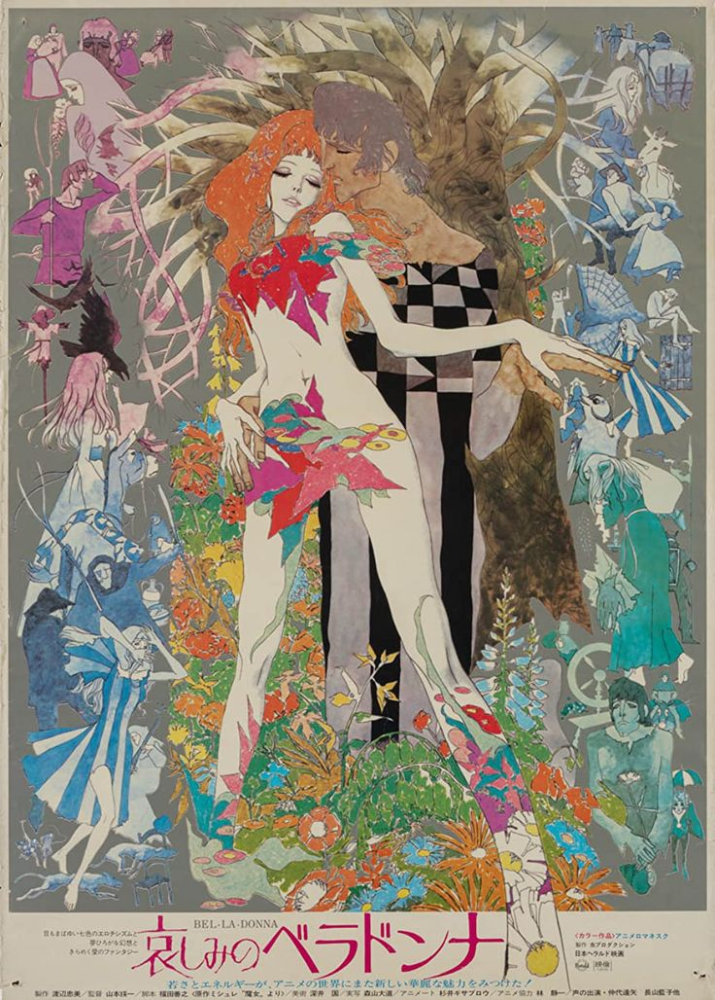
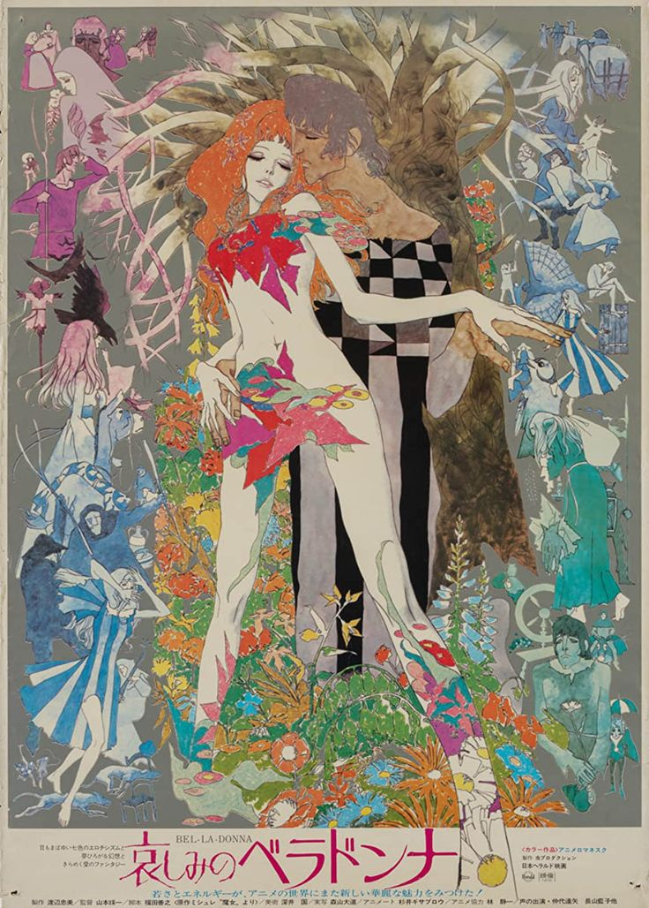
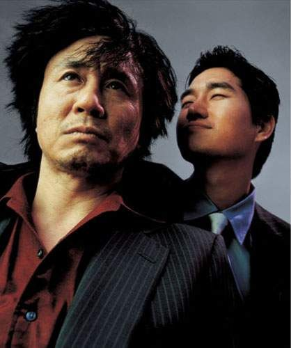
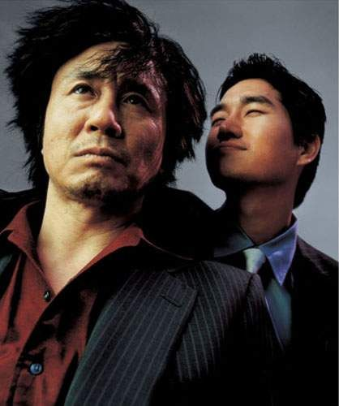

Fallen Angels (1995)


Director: Wong Kar-wai
Genre: Crime/Romance
Release Year: 1995
Synopsis: "Fallen Angels" is a mesmerizing film directed by Wong Kar-wai that delves into the gritty underworld of crime and romance in Hong Kong. Set against the neon-lit streets of the city, the film weaves together the stories of two intriguing characters: a hitman named Wong Chi-Ming, known as "The Killer," and a mysterious woman named Blondie, who works as a professional thief. As their paths intertwine, they navigate through a world of loneliness, longing, and lost connections. Through stunning cinematography and a hauntingly atmospheric soundtrack, Wong Kar-wai creates a visually stunning and emotionally resonant cinematic experience.
Cast: Leon Lai as Wong Chi-Ming, Michelle Reis as Blondie, Takeshi Kaneshiro as He Zhiwu, Charlie Yeung as Charlie


 


 
